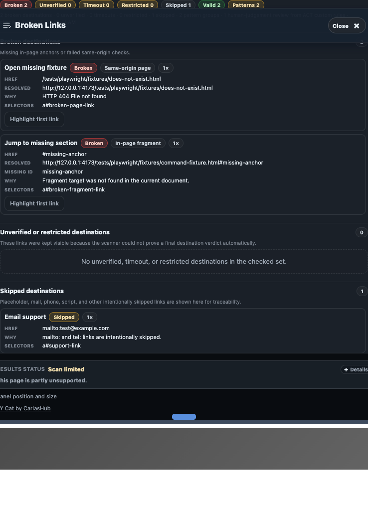
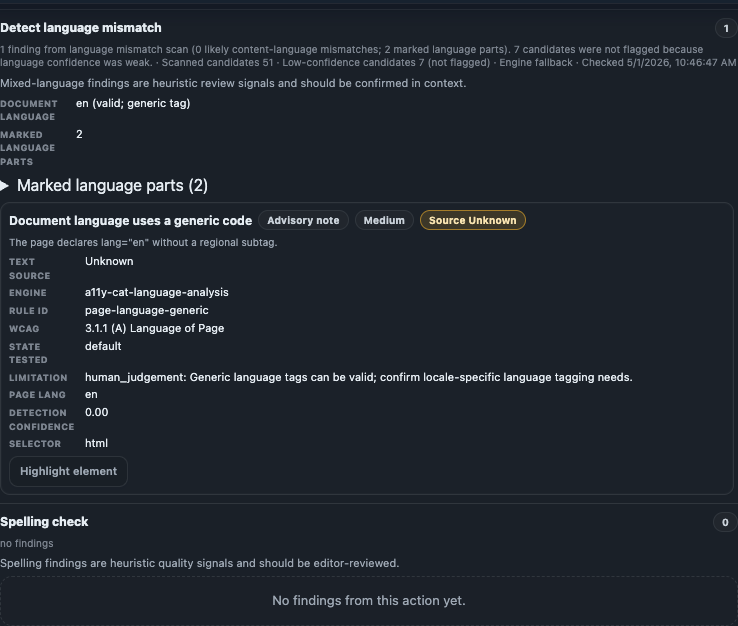

Scanner tools
Scanner tools
This page documents feature-level tool outputs and how to interpret each one.

Broken Links
Broken Links checks same-origin targets with HEAD/GET requests in page context. Cross-origin links are reported as unverified by design. Timeout means no response within the check window.
Metadata Check
Metadata checks review Open Graph tags, Schema.org, and JSON-LD structure. Missing or malformed metadata is advisory/review unless your project treats it as a hard requirement.
Language Mismatch and Spelling Check
Language checks evaluate lang presence/validity and context mismatch. Spelling checks are advisory and language-support dependent; unsupported languages are skipped rather than forced to English.

Page Text Scale / Reflow, Alt Text, Heading Structure
- Page Text Scale / Reflow: identifies layout stress and scaling/reflow risks in current viewport state.
- Alt Text Analysis: checks missing or weak text alternatives; quality still needs contextual review.
- Heading Structure: inspects heading order/hierarchy for navigability concerns.
Tool source matrix
| Tool | Primary source | Typical classification |
|---|---|---|
| Broken Links | Custom runtime checks | Review / advisory / limitation |
| Metadata | Custom parser checks | Advisory / review |
| Language | Custom language checks | Review / advisory |
| Spelling | Local spelling engine | Advisory |
| Alt text / headings / reflow | axe-core + custom logic | Confirmed and/or review |